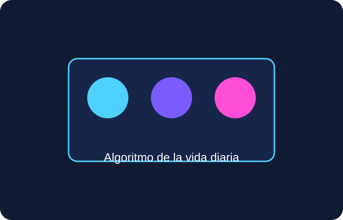
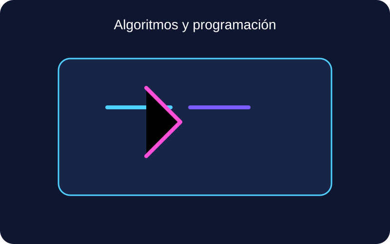
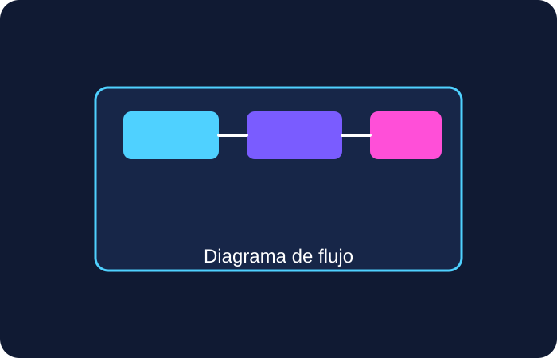
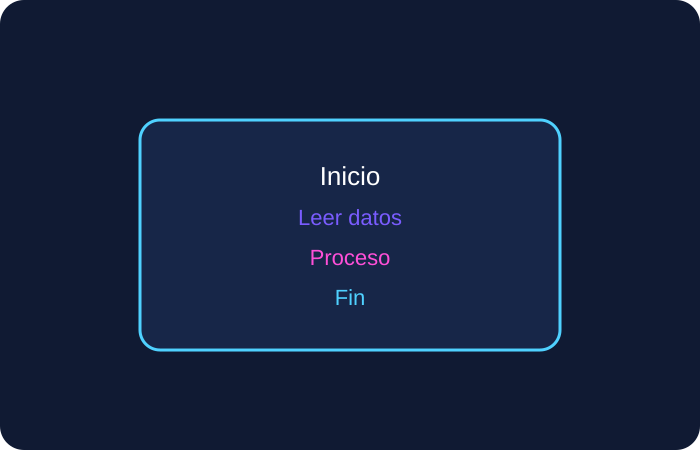

Definición
Un algoritmo es una secuencia ordenada de pasos que permite resolver un problema o ejecutar una tarea de manera precisa, sin ambigüedad.
Unidad 2
Un algoritmo es una propuesta de solución paso a paso para un problema. Cuando se escribe de forma clara, permite construir programas, automatizar tareas y analizar procesos de manera eficiente.


Un algoritmo es una secuencia ordenada de pasos que permite resolver un problema o ejecutar una tarea de manera precisa, sin ambigüedad.
Inicio Leer la hora actual Si es de mañana, mostrar "Buenos días" Si es de tarde, mostrar "Buenas tardes" Si es de noche, mostrar "Buenas noches" Fin
Permiten expresar una solución de forma ordenada y comprensible para otras personas o para un programa.
Un buen algoritmo ayuda a ahorrar tiempo, memoria y recursos al resolver problemas complejos.
Los algoritmos pueden adaptarse a múltiples situaciones, lo que favorece la programación y el análisis de procesos.

El diagrama de flujo representa visualmente la lógica de un algoritmo mediante símbolos que indican inicio, proceso, decisión, entrada, salida y conexión entre pasos.

El pseudocódigo es una forma de escribir la lógica de un algoritmo con un lenguaje cercano al humano, pero con una estructura organizada que se asemeja a un programa.
Inicio Leer num1 Leer num2 sumar = num1 + num2 Mostrar sumar Fin
En resumen, el algoritmo es la idea, el diagrama de flujo la representación visual y el pseudocódigo la forma escrita de esa solución.